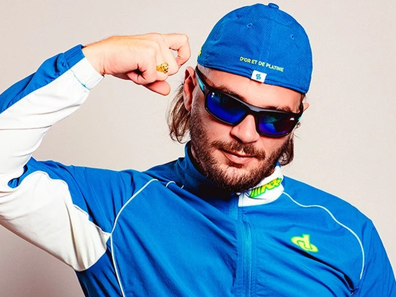
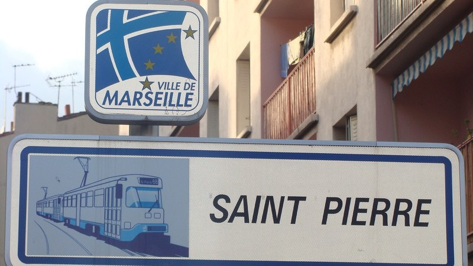
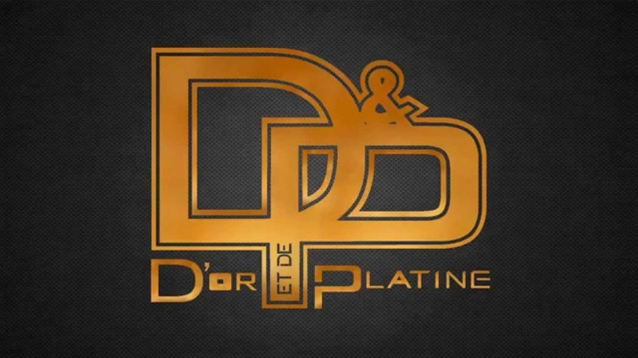
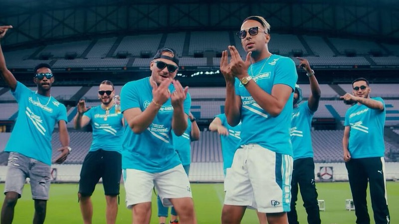
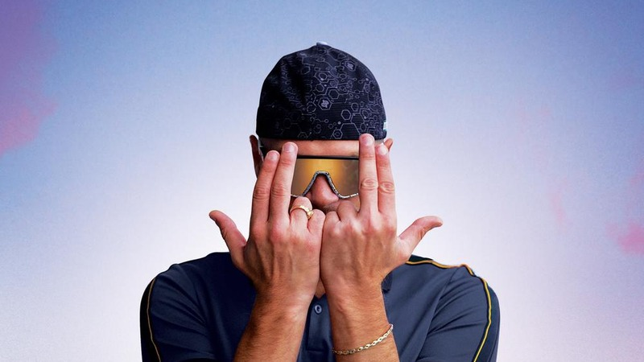

Parcours
De la cité Louis-Loucheur à son propre label : comment Julien Mari est devenu Jul.
Ouvrir la rubriqueJulien Mari, dit Jul, est né à Marseille en 1990. Depuis son premier album en 2014, il sort deux disques par an ou presque, dirige son propre label et remplit les plus grands stades de France.
Ce site retrace son parcours, revient sur ses albums marquants et explique pourquoi il occupe une place à part dans la musique française.

De la cité Louis-Loucheur à son propre label : comment Julien Mari est devenu Jul.
Ouvrir la rubriqueDeux albums par an ou presque : la production de Jul et deux disques qui ont marqué sa carrière.
Ouvrir la rubriqueDes stades complets, un signe de la main reconnaissable et une communauté fidèle.
Ouvrir la rubrique
Une enfance à Marseille, un premier pseudonyme et un premier single en 2013.
Lire l'article
En 2015, Jul quitte son label et crée le sien. Ce choix lui laisse la main sur ses sorties.
Lire l'articleSorti fin 2015, c'est l'album le plus vendu de Jul et celui qui lui vaut une Victoire.
Lire l'article
En 2020, Jul réunit les rappeurs de sa ville sur un projet « 100 % Marseillais ». Le disque d'or arrive en 14 jours, et le single Bande organisée devient le single de diamant le plus rapide de l'histoire de la musique française.
Lire l'article
En quatre ans, Jul passe d'un premier Vélodrome à un record d'affluence au Stade de France.
Lire l'article
Trois lettres dessinées avec les mains, une « Team Jul » et une flamme olympique à Marseille.
Lire l'article